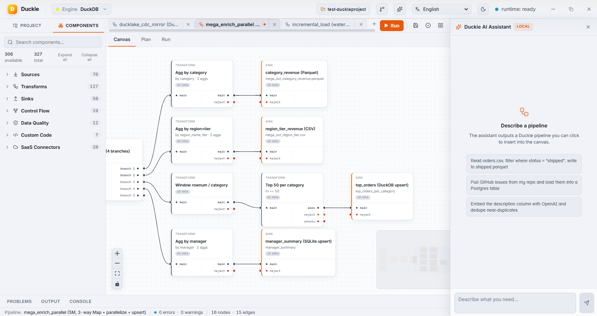
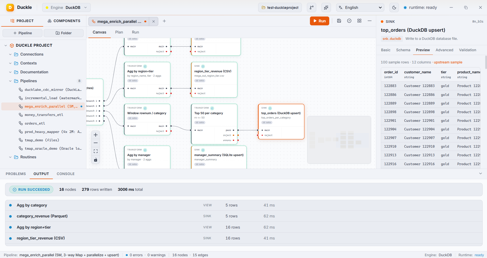
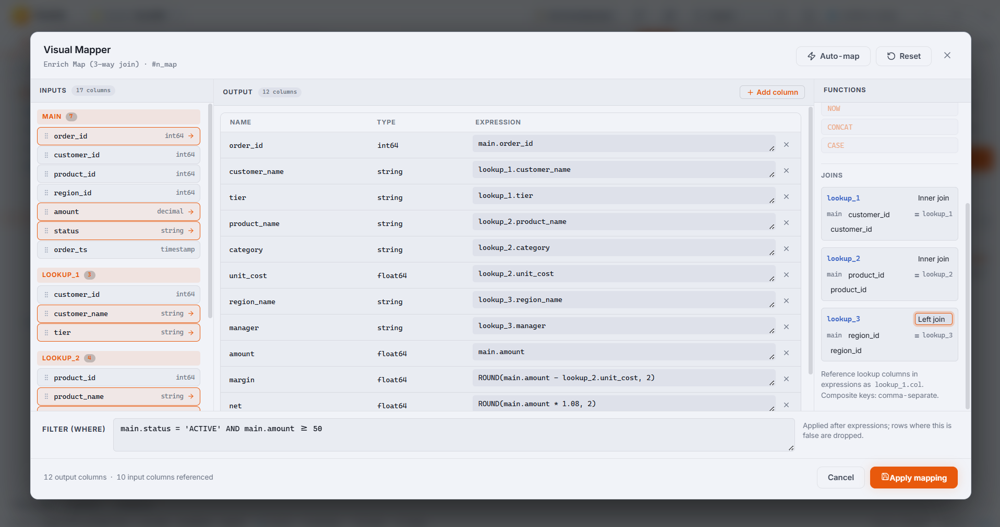

The local-first data studio with a built-in AI assistant.
Duckle is an open-source desktop ETL / ELT studio. Drag a pipeline onto the canvas, or describe it in plain English to Duckie - the on-device AI - and run it at native columnar speed through DuckDB. 329 components, a scheduler, and an MCP server, in a ~65 MB single-file app.
✓ Free & open source✓ No account, no telemetry✓ Your data never leaves your machine✓ Windows · macOS · Linux
329components in the palette
~65 MBsingle-file download
0servers or cloud accounts
60UI languages (RTL too)
Part of the DuckDB ecosystem
Duckle turns DuckDB into a visual, embeddable ETL platform.
Every pipeline compiles to SQL and executes through DuckDB - vectorized, columnar, local. Duckle sits in the ingestion + transformation layer of the DuckDB stack, next to tools like dlt, dbt, SQLMesh and Evidence, and reads the wider DuckDB family natively: DuckLake tables, MotherDuck, the Quack remote protocol, and the community extensions.
"See your whole pipeline." Duckle is an independent, open-source member of the DuckDB ecosystem - it matches the DuckDB brand palette and builds on the engine, but is not affiliated with or endorsed by DuckDB Labs or MotherDuck.
Wire nodes together and press Run. Duckle compiles the graph to SQL, runs it on DuckDB, and shows a live preview and the generated SQL on every node. No black box.
Everything a data tool should be. Nothing it shouldn't.
🔭
Visual, never opaque
The canvas compiles to readable SQL and every node has a live preview tab. Inspect, tweak, and trust what runs.
🤖
Local AI assistant
Describe a pipeline in English; Duckie writes the JSON and drops it on the canvas. Qwen 2.5 Coder runs on your CPU - no API key, no cloud.
⚡
Native speed
Execution runs through DuckDB: vectorized, columnar, local. Jobs that crawl in a spreadsheet finish in milliseconds.
📦
One self-contained binary
~65 MB app that embeds the headless runner and MCP server. Engines install on first launch with a guided step.
🧮
Git-friendly by design
Pipelines, connections, contexts and routines are plain files in a folder you pick. Diff them, branch them, review them.
🔒
Private & secure
Runs fully offline. Connection secrets and the git token are AES-256-GCM encrypted at rest with a per-workspace key.
📅
Scheduler & triggers
Run pipelines on a cron or interval, or on file changes. Watermark incremental loads advance state only on success.
🔗
MCP server built in
Connect Claude or any LLM over MCP to list components, generate pipelines, validate, run, and build standalone executables.
🌐
60 languages
The full UI - palette, chat, properties, dialogs - ships localized in 60 languages, with RTL support.
Integrations
Connect to almost anything - and it works today.
Files, lakehouses, SQL databases, warehouses, NoSQL, vector DBs, streaming brokers, SaaS REST/GraphQL APIs, even FTP and IMAP. Each connector is covered by tests, not a coming-soon list.
Describe what you need. Duckie writes the pipeline.
The assistant in the right sidebar is powered by Qwen 2.5 Coder 1.5B through llama.cpp, downloaded once (~1.1 GB) and then run entirely on your CPU.
Truly local - runs as a subprocess on 127.0.0.1. Disconnect wifi; it keeps working.
One-click insert - Duckie's JSON populates the canvas with positioned, wired nodes.
Bring your own model - point it at Ollama, OpenAI, or anything OpenAI-compatible.
Sandboxed - the model has no filesystem, network, or tool access. It only emits pipeline JSON.

Duckie streams a valid Duckle pipeline; one click drops it on the canvas.
Real pipelines, not mockups
Built and run in Duckle

One run, many branches: 16 nodes finish in a few seconds. Concurrency auto-detects from CPU cores; branches write to Parquet, CSV, DuckDB and SQLite at once.

The visual Map editor - main plus lookups, per-output expressions, inline filter.DuckLake CDC mirrored via upsert + delete propagation (100k rows).
Get started
Download Duckle. Build your first pipeline in 60 seconds.
Free and open source, dual-licensed MIT OR Apache-2.0. Windows, macOS and Linux. No account, no telemetry.